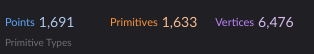
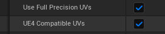

第 2 週
VAT 與 USD Instancing 測試
1 月 14 日
已完成：
待辦事項：
-
上週我測試了兩種不同的流程（USD 和 VAT），把 Yichen 的蕨類模擬從 Houdini 轉到 Unreal
-
在 Houdini 和 Unreal 中嘗試 VAT Instancing
-
在 Houdini 中嘗試另一種 Instancer 方法，並測試它在 Unreal 中的效能
-
在 Unreal 中嘗試帶動畫的 USD Instancing
Houdini 中的 USD INSTANCING：
USD 有兩種方式：instanceable primitives 和 point instancing。
Point instancing：嘗試不同的 point instancing 方法，我用 15 株蕨類來測試檔案大小。


Point Instancer：蕨類在 Unreal 中沒有動畫。
Instanceable Reference：成功
Reference：成功
Instanceable Inherit：成功
Inherit：成功
Instanceable Specialize：成功
Specialize：成功

結果：所有方法的效能相近，檔案大小也相同。
Unreal 中的 USD INSTANCING：
和 Danci 討論並進一步研究後，我們發現 Unreal 不支援帶動畫的 USD instancing。
VAT（除錯）
我要用公式測試 VAT 是否可行：(影格數 × 點數) / 貼圖尺寸，並確保結果不超過 9000。我減少了蕨類的毛髮面片，模型現在是 25,861 個多邊形。依公式計算結果為 757.6，所以算圖很快，也成功輸出了。我認為在低面數模型上使用 opacity 貼圖會是不錯的做法。

問題：
如上週提到的，我把整株蕨類匯入 Unreal 時，畫面出現破綻、葉子會閃爍。為了找出問題，我決定把葉子單獨拆出來，先測試單片葉子，找出可能造成問題的部分。
我嘗試了不同的蕨類葉子細分等級，觀察它們對 Unreal 中效能與畫質的影響。


首先：
後來我找到即使提高細分仍有拉伸破綻的原因：枝幹和葉子互相穿插。拿掉枝幹後，效果好多了。
不能穿插的原因：VAT 只是從貼圖重播烘焙好的逐頂點位置（沒有碰撞、自碰撞或表面先後順序的資訊），所以當部件重疊時，模型無法判斷哪一面應該在前面，導致穿模、閃爍或撕裂。
接著我測試了蕨類，看起來還是有破綻。

解決方法：盡量避免生長中的植物自我穿插，並確保面數足以應付快速變形。

關閉 Tangent Space Normal

勾選這些選項
Unreal 中的 VAT INSTANCING（NIAGARA）
最重要的是從 Houdini 輸出時要勾選這個選項。

把這三個資料夾匯入 Unreal，然後在 material instance 中從資料夾複製資料。接著建立一個 Niagara 系統，在 Render 下的 Mesh Renderer 指定模型與材質。


-
嘗試 USD variants 和 PDG